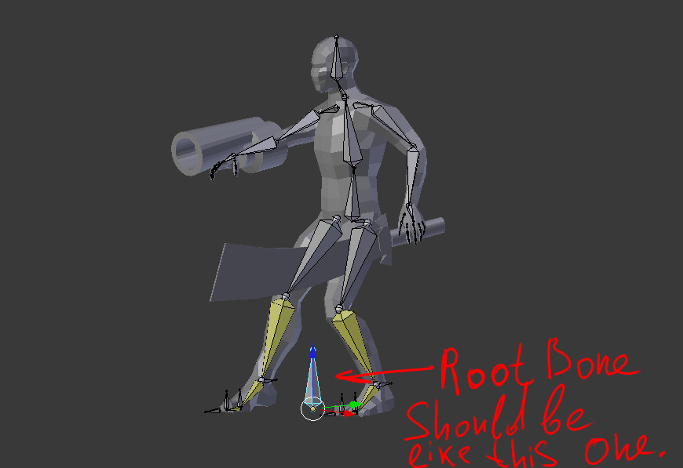
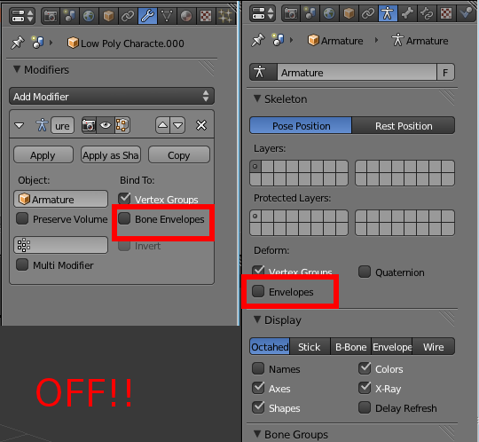

Working Blender and OgreXML Versions
Here you can find working combinations of Blender and the OgreXML exporter, with any tips or bugs associated with each.
|
As of Blender version 2.8+, OgreXML is no longer compatible for exporting. See Supported External File Types for other options. |
| Blender Version | OgreXML Exporter Version | Notes |
|---|---|---|
2.78-2.79 |
Root bone, no transforms on object, no envelopes |
|
2.6.3 |
Root bone, no transforms on object, no envelopes |
|
2.6.2 |
Root bone, no transforms on object, no envelopes |
|
2.6.1 |
? |
|
2.6.0 |
? |
Tips
Tips for exporting animations through OgreXML correctly:
-
apply all transformations
-
armature should have 0,0,0 transformation (loc,rot,scale)
-
model object should have 0,0,0 transformation (loc,rot,scale)
-
root bone should have 0,0,0 transformation (loc,rot,scale)
-
no envelopes
Test Character - http://dl.dropbox.com/u/26887202/123/jme_blender/characterOgre26.zip
 